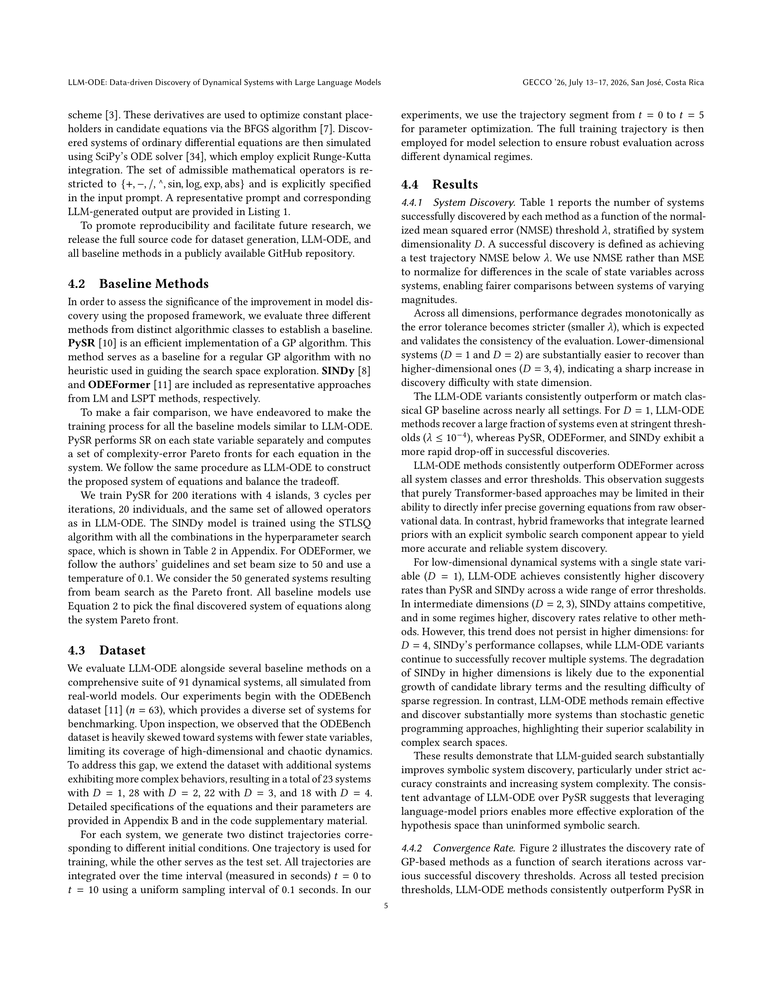
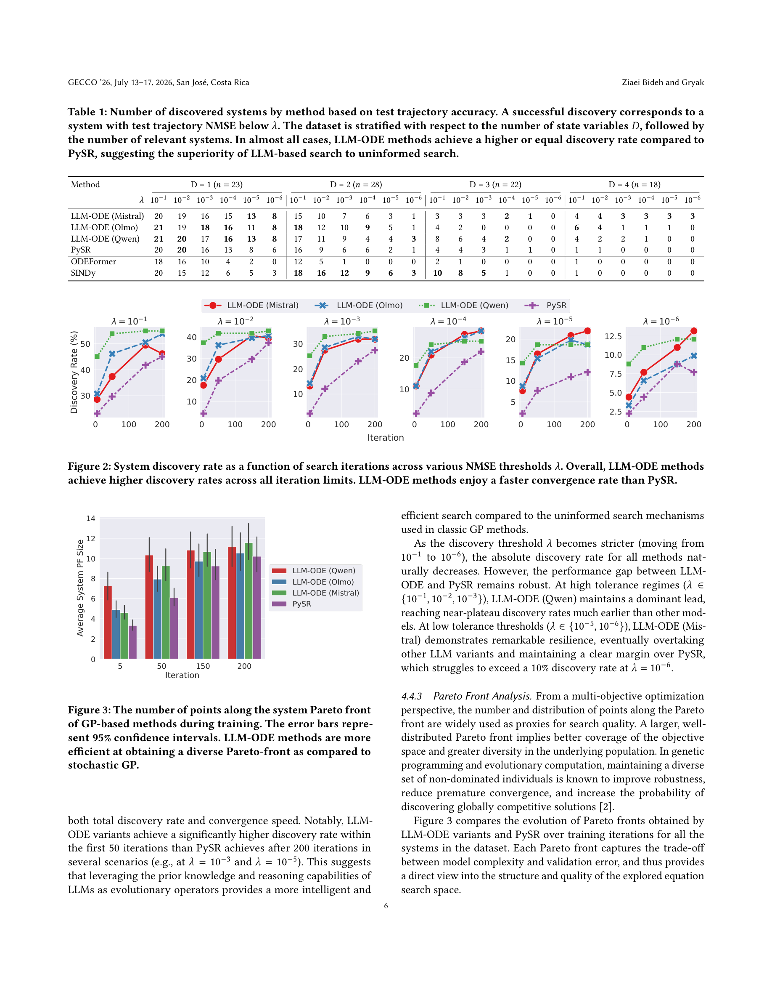
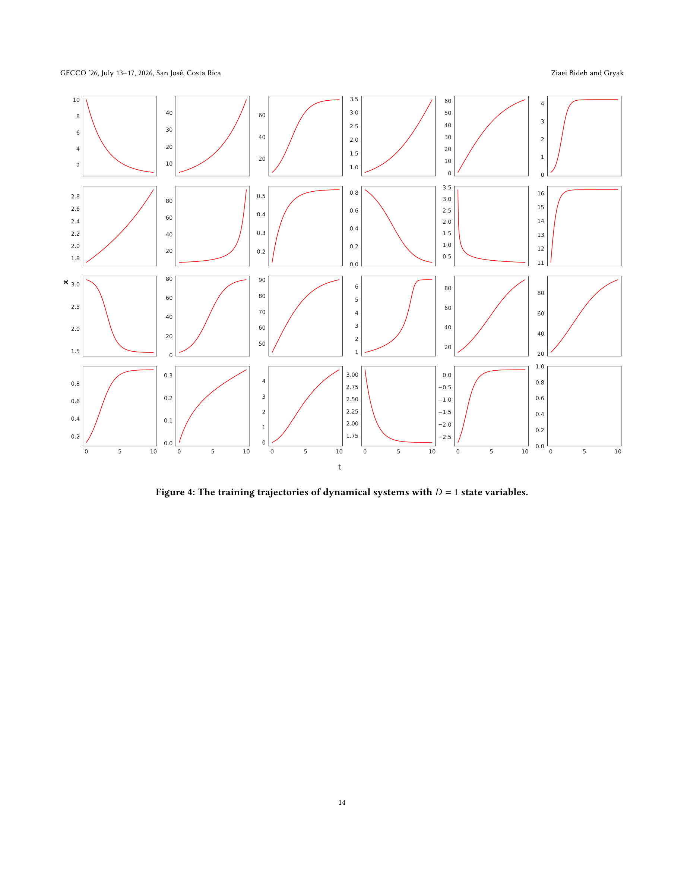
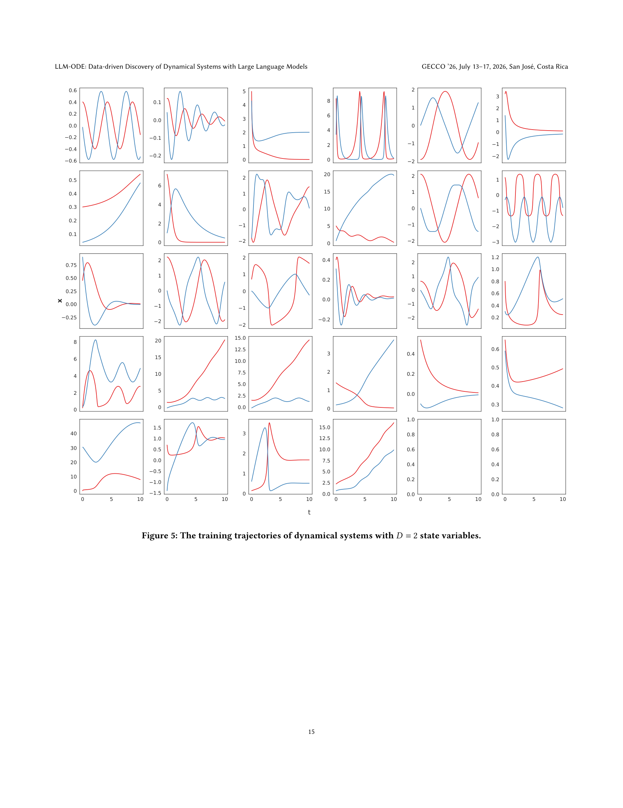

Figure 1
저자: Amirmohammad Ziaei Bideh, Jonathan Gryak | 날짜: 2026-03-21 | arXiv: 2603.20910 | 학회: GECCO '26
Figure 1
동역학 시스템의 지배 방정식(ODE)을 관측 궤적 데이터로부터 자동 발견하기 위해 LLM을 genetic programming(GP)의 진화 연산자로 활용하는 하이브리드 프레임워크 LLM-ODE를 제안한다. 기존 GP의 무작위 mutation/crossover를 LLM이 생성하는 구조적으로 informed된 제안으로 대체하여, 기호식(symbolic expression) 탐색 효율을 크게 향상시켰다. 91개 동역학 시스템(1~4차원, 혼돈 역학 포함) 벤치마크에서 LLM-ODE가 PySR, SINDy, ODEFormer를 탐색 효율과 Pareto front 품질 측면에서 일관적으로 능가한다.

Figure 2

Figure 3

Figure 4

Figure 5
총평: GP의 무작위 진화 연산자를 LLM의 구조적 제안으로 대체한다는 아이디어가 명확하고 효과적이며, 91개 동역학 시스템에 대한 포괄적 벤치마크와 3종 LLM 비교가 실험의 신뢰성을 높인다. 연립 ODE 시스템 발견으로의 확장이 기존 LLM-SR 대비 중요한 진전이다. 고차원에서의 절대 성능과 실험 데이터 적용 가능성은 향후 과제로 남지만, LLM을 과학적 방정식 발견의 지능형 탐색 도구로 활용하는 방향성을 잘 제시한 연구이다.